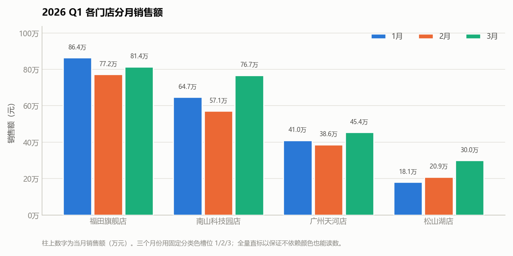
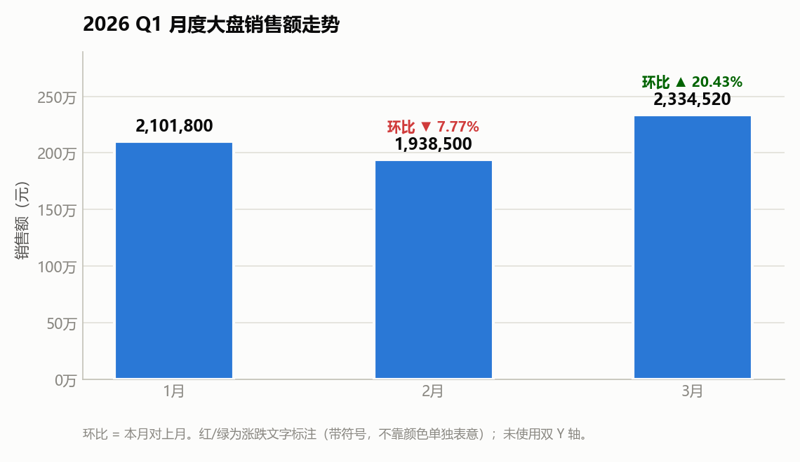

这个痛点，是不是你
痛点卡 · 办公-03 多个 Excel 合并 + 柱状图 + 分析报告
案例来源：《100 个 WorkBuddy+ 应用案例合集》第一章「一、自动化办公类案例」案例 4：Excel 数据处理
复刻日期：2026-10-12
一、痛点原句（引用手册原文）
手册出处： 案例 4
提示词：
把桌面"2026Q1销售数据"里所有 Excel 合并，生成柱状图+分析报告
执行效果： 自动合并多个 Excel 文件，生成可视化图表和分析报告。
提取说明： 手册此处只有「一句提示词 + 一句执行效果」，没有写出第二人称的痛点导入、也没有写"以前要折腾多久"的代价句。按《子Agent执行规范》第〇补节，痛点提取的三个位置（章首导入 / 案例引入 / 章末收束）在本案例均缺位。因此本卡的痛点句主体为 【补全】，仅"提示词要解决什么任务"部分引自原文。
二、痛点主体（【补全】）
谁： 连锁零售企业的区域运营 / 财务分析岗（本案例取"管着 12 家门店月度报表的运营主管"）。
真实的月初场景： 12 个门店各自报来一份 Q1 销售 Excel。想得到"哪个店在涨、哪个店在跌、钱从哪来"的答案，得先手工做完下面这一串：
| 步骤 | 手工做法 | 代价 |
|---|---|---|
| 1. 对齐格式 | 有的店表头在第 2 行（第 1 行是标题），有的列顺序不一样，有的多一列备注 | 每次都要肉眼比对 |
| 2. 复制粘贴 | 12 份表逐个复制到一张总表 | 12 次操作，粘贴错位一次就全盘错 |
| 3. 清理 | 东莞那家表末带了一行"合计"，直接粘进来会被加两遍 | 不细看根本发现不了 |
| 4. 写公式 | SUMIF/SUMIFS 按门店、按月汇总；占比、环比逐列补 | 公式写错一个区域，结论全歪 |
| 5. 算客单价 | 综合客单价要按"总额÷总单数"加权，不能对三个月的客单价取平均 | 这里最容易算错，而且错了看不出来 |
| 6. 做图 | 插柱状图、调格式、配色、加数据标签 | 反复调十几分钟 |
| 7. 写报告 | 把上面的数字组织成一段一段的分析结论 | 最耗时，也最容易被"再想想"推倒重来 |
旧做法的代价： 整套走完 1–2 小时，而且 每个月重来一次；更糟的是——手工链条上任何一环出错（多算一行合计、公式拉错区域、客单价用简单平均），报表看起来完全正常，但数字是错的。错的数据比没有数据更危险。
想要的目标： 把 12 份门店 Excel 丢进去，直接拿到 ① 一张合并好的总表（数字可逐项核对） ② 一张能放进汇报的柱状图 ③ 一份结论有数据支撑的分析报告。不是"学会做透视表和图表"，是"这个月的分析活儿已经干完了"。
【补全】为什么值得解决： 这份工作的真实价值在"看出来什么"，不在"把 12 份表粘到一起"。手工环节吃掉的是分析的时间、留下的是出错的风险。把合并—汇总—出图—成文这条链路交给 Agent，人就能把 1–2 小时全部花在"福田为什么 3 月不如 1 月"这类真正要判断的问题上。而且这条链路一旦固化，下个月换一批源文件即可复跑，边际成本趋近于零——这才是"每月重来"这个痛点的真正解药。
三、价值归类
目标导向 ✅
要解决的是"月底月初必须交付一份可核对、有结论的门店销售分析"这个业务目标。 反面想想就清楚——如果只做成"教你用 Excel 做合并单元格和柱状图"，那是工具理性，本卡不通过。
四、本案例的"人工易错点"（复刻时特意做进素材，用来验证痛点是真的）
复刻时我把上面第 1、2、3、5 条做进了输入素材，让"手工会很痛"变成可验证的事实：
- 福田店 → 第 1 行是标题行，表头在第 2 行
- 天河店 → 列顺序不同（月份在前），且多一列"备注"
- 松山湖店 → 表末带一行"合计"，不剔除就会重复计算
- 客单价口径 → 福田加权 714.27 元 vs 简单平均 715.00 元；松山湖加权 450.50 元 vs 简单平均 447.67 元
第 4 条是最阴险的：两种算法都"看起来对"，但差出来的数字会直接改变"哪家店客单价最低"的判断。复刻产物里对这一点做了显式标注。
AI 是怎么解决的
产物 · 在线预览



